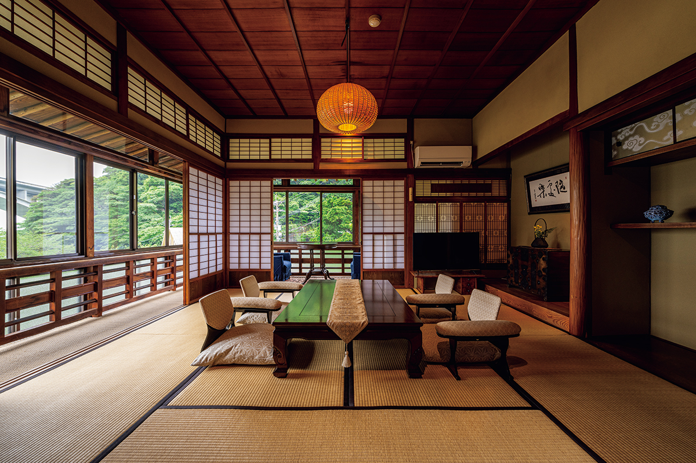
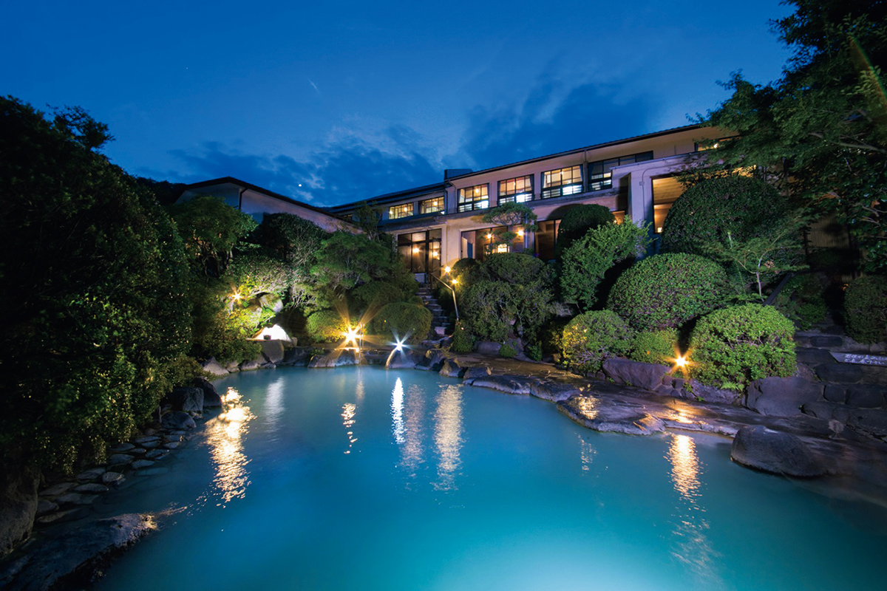
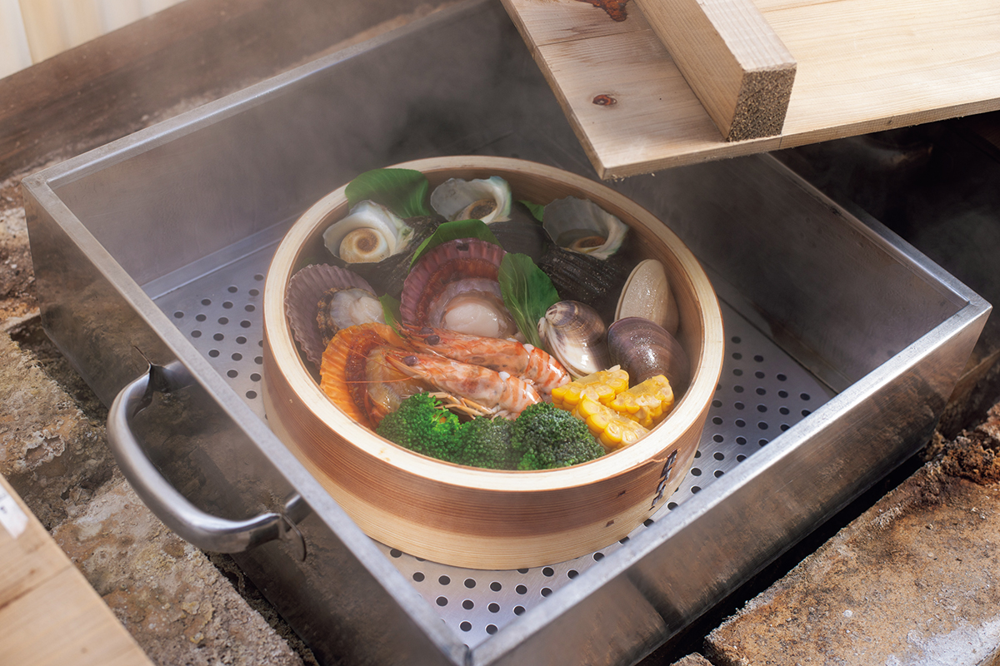
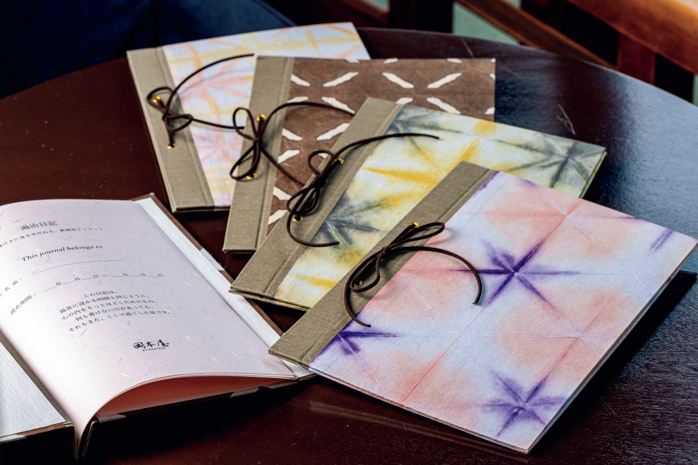

Префектура Оита · Беппу, Мёбан · онсэн
Рёкан Okamotoya в Мёбане: как в Беппу лечатся водами по-новому

В Японии издавна ездили на воды не на день, а на недели: этот обычай называют тодзи (лечение водами). Рёкан Okamotoya в Беппу хранит его уже полтора века и в 2026 году предложил гостям свою версию тодзи для нашего времени.
Онсэн
Молочно-голубая вода Мёбана
Мёбан лежит на склоне над Беппу, одним из самых известных курортов префектуры Оита, и славится сернистыми источниками. Рёкан Okamotoya открылся здесь в 1875 году. Его основа это собственный источник, который бьёт из земли сам, и вода в купальнях течёт напрямую, без разбавления и повторного использования.

Вода молочно-голубого цвета, по составу это простой сернистый источник. Он получил сертификат «онсэна для красивой кожи»: считается, что такая вода мягко отшелушивает кожу и оставляет её увлажнённой. Рёкан всегда жил тодзи, берёг этот обычай и копил знания о том, как правильно лечиться водами.
Программа
Тодзи на три, пять или семь ночей
На этом опыте в 2026 году построили программу «Новое тодзи. Велнес»: долгий отдых на 3, 5 или 7 ночей, где к старым приёмам добавили взгляд современной косметологии и медицины. День строится вокруг воды. Купаться советуют утром, днём и вечером, не торопясь, а воду из источника ещё и пьют, чтобы она действовала изнутри.

Главное блюдо программы: дзигоку-муси, фирменная еда Беппу. Овощи, рыбу и мясо готовят на раскалённом пару источников, и вместе с паром в еду переходят минералы воды. Это блюдо обязательно стоит попробовать в Беппу хотя бы раз.
Хозяйка рёкана сама отобрала для гостей программы десять «привилегий тодзи». Одна из них это «Дневник тодзи»: в него каждый день записывают, как прошёл день, а медитация и прогулки по окрестностям становятся привычкой. Так легче почувствовать, что воды действительно работают.

Обычная ночь с ужином и завтраком стоила от 26 950 иен с налогом и сервисным сбором в 2026 году, программа на 3 ночи и 4 дня с ужинами и завтраками от 64 350 иен. Курортный налог платится отдельно.
Okamotoya
- Адрес
- префектура Оита, Беппу, Мёбан, 4-куми
- Телефон
- +81 977-66-3228
- Номера
- 12
- Цены / Вход
- ночь с ужином и завтраком от 26 950 иен; программа «Новое тодзи. Велнес» 3 ночи и 4 дня с ужином и завтраком от 64 350 иен (с налогом и сервисным сбором, без курортного налога)
- Заезд / выезд
- 15:00 / 10:00
- Как добраться
- на машине около 8 минут от съезда Беппу скоростной дороги Хигаси-Кюсю; от автобусной остановки Мёбан около 1 минуты пешком
- Сайт
- okamotoya.net